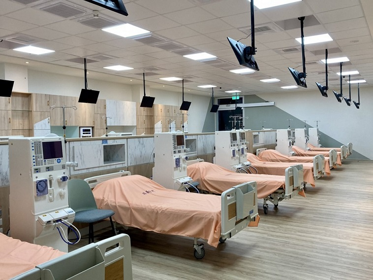
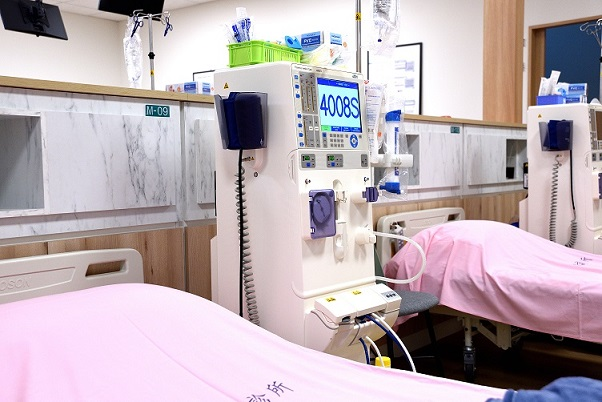

給腎友第二個溫馨的家
活力醫療中心附設之「智能血液透析中心」，由具備醫學中心資歷的腎臟專科醫師及資深血液透析護理團隊親自駐診。
我們深知腎友每週需與機器相伴數小時的辛勞，因此我們不僅引進全球最頂尖的透析儀器與超純水系統，更致力於打造明亮、寬敞、無壓力的休閒級照護環境，讓每一次的透析治療，都像是一場安心的休息。

我們的核心優勢
雙 RO 超純水系統
水質是透析的靈魂。本中心採用醫學中心級「雙重逆滲透 (Double RO) 水處理系統」，確保透析液達到最高純淨標準，大幅減少發炎反應與併發症發生。
進口高階智能透析機
全面配備德國/日本原裝進口最新型洗腎機，並使用高透氣、高清除率的人工腎臟，精準監測透析過程，提供高效且安全的毒素清除率。
尊榮舒適照護環境
配備遠紅外線瘻管照射儀。每床皆有獨立專屬液晶電視、免費 Wi-Fi 及人體工學電動沙發床，讓您在透析期間享有絕對的放鬆與隱私。
醫療設備與環境導覽
🔍 點擊圖片可全螢幕放大觀看



透析諮詢與服務專線
我們誠摯歡迎有透析需求的腎友或家屬前來本中心參觀。我們的護理團隊將為您詳細解說設備、水質與照護流程，並協助您辦理相關轉診手續。
- 📞 洗腎中心專線：(08) 123-4567 轉 888
- ⏰ 服務時段：週一至週六 07:30 - 21:00 (週日休息)
- 🧑⚕️ 醫療團隊：腎臟專科醫師、專業血液透析護理師、特約營養師